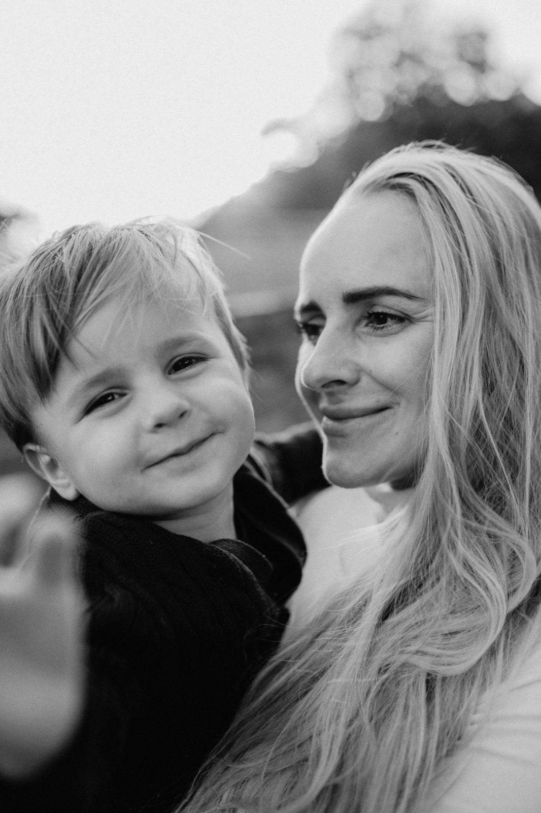
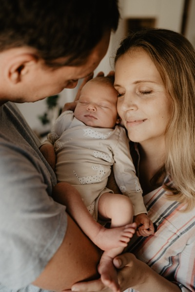
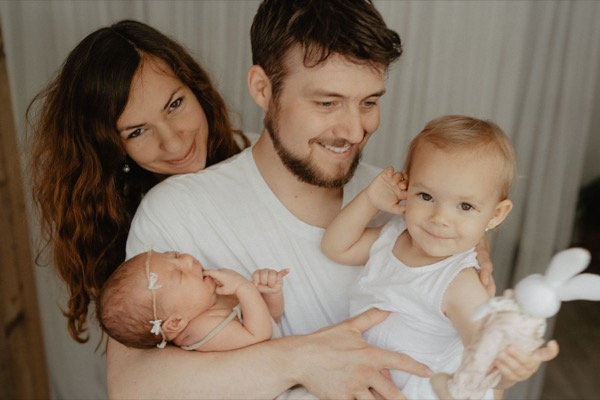

- 12 letzkušeností s fotografií
- 900+rodinných příběhů
- 0 pozovánínemusíte se přetvařovat
Rodinné focení a video v Brně
Děti rostou neuvěřitelně rychle. Zachytíme vaše společné chvíle, ke kterým se budete vracet znovu a znovu. Ke smíchu, objetím a pohledům, které vám i za mnoho let rozbuší srdce.
Nemusí.
Focení nemusí být dokonalé, aby bylo krásné.
Děti nemusí se smát na povel, sedět na jednom místě ani se dívat do objektivu.
Dám vám čas. Na obejmutí, svačinu, běhání i obyčejné blbnutí.
Foťák přepínám do tichého režimu, takže děti brzy zapomenou, že je někdo fotí.
A právě tehdy často vzniknou ty nejkrásnější fotografie.
Vy jen buďte spolu. O zbytek se postarám já.

Pokud chcete přirozené fotografie plné pohybu, smíchu, objetí a malých okamžiků, které vás spojují.
Prohlédnout rodinné focení →
Pokud chcete jednou znovu vidět jiskru v očích i osobnost, která se mění rychleji, než si stačíte uvědomit.
Prohlédnout portréty →
Pokud chcete vzpomínku, která se znovu rozpohybuje.
To, co fotografie zachytí v jediném okamžiku, video nechá znovu prožít – v pohybu, atmosféře a s hudbou.
Za pár let už si možná nebudete pamatovat, jak moc byly dětské ruce malé.
Jak se smály. Jak vás objímaly. Jak vám říkaly „maminko“.
Fotografie vám to připomenou.
A rodinné video vám to dovolí znovu prožít.
Dnes investujete do focení.
Za dvacet let budete držet v rukou kus svého života.
Najdeme čas, kdy nemusíte nikam spěchat.
Poradím s oblečením, místem i vším, co potřebujete vědět před focením.
Nemusíte pózovat. Já vás provedu focením a zachytím to, co mezi vámi vzniká přirozeně.

„Jak video, tak fotky jsou naprostá pecka a předčily mé očekávání. Miluji ty fotky, kde se Olivka bezděčně usmívá a tak nějak vím, že je jí s námi fajn. Je z nich cítit cit a jemnost. Děkuji za zachycení pro nás tolik vzácného.“
Dita Bednářová
Rodinné foto a video

„Inka má jedinečnou schopnost zachytit emoce. Z jejích fotek sálá nádherná energie. A její trpělivost a empatie při focení novorozence, 20měsíčního vzpurného batolete a manžela, který se nerad fotí, byla opravdu obdivuhodná.“
Hanka Svobodová
Rodinné foto

„Nádherné video, které nám bude živě stále připomínat první dny Amálky na světě. Fotky jsou báječné, nádherné, ale video je video. Doporučuji všema deseti!“
Martina Franková
Rodinné foto a video
Z toho vůbec nemějte strach! Děti nejsou roboti a já s tím naprosto počítám. Na focení si vždycky nechávám dostatek času, takže nikam nespěcháme. Když bude potřeba, dáme si pauzu na svačinu, na obejmutí od maminky nebo na chvíli blbnutí. Foťák navíc přepínám do tichého režimu bez hlasitého cvakání, takže děti nejsou v pozoru, brzy mě přestanou vnímat jako „cizí fotografku“ a berou to spíš jako fajn setkání. Obvykle tak vznikají ty nejpřirozenější fotky. Na mých foceních vládne hlavně pohoda a smích.
Hlavní je, abyste se cítili sami sebou a pohodlně. Doporučuji volit spíše jednobarevné oblečení bez velkých nápisů a divokých vzorů, které zbytečně odvádějí pozornost. Sluší jemné, přírodní a zemité odstíny, které k sobě hezky ladí.
Nejraději fotím venku v přírodě – na louce, v parku, u vody nebo na vašem oblíbeném místě. Pokud počasí nepřeje nebo toužíte po klidnějším prostředí, můžeme fotit i v mém světlém prostoru v centru Brna nebo u vás doma, na chalupě atd.
Záleží na vybrané variantě. U delších rodinných focení si nechávám dostatek času, abychom nikam nespěchali a mohli zachytit i ty nejpřirozenější chvíle.
Upravené fotografie dostanete do 3 až 4 týdnů od data focení. Předávám je v elektronické podobě prostřednictvím soukromé online galerie v barevném a černobílém provedení.
Ano, fotím těhotenské bříško, miminka i starší děti – všechno je to pro mě jedna rodinná kapitola.
Ideální je ozvat se mi zhruba 4 týdny předem, obzvlášť pokud plánujete focení o víkendu. Termín si ale klidně rezervujte i dřív, třeba hned jak víte, že se blíží nějaká rodinná událost nebo hezké období. Vždycky se snažím vyjít vstříc i nečekaným nápadům, takže se nebojte napsat ani na poslední chvíli.
Pojďme zachytit právě tuhle chvíli
Nemusíte čekat na ideální období, dokonalé oblečení ani děti v nejlepší náladě. Tenhle okamžik je právě teď.
Napište mi a společně vybereme místo, termín i druh focení, který bude sedět právě vaší rodině.
Chci poradit →